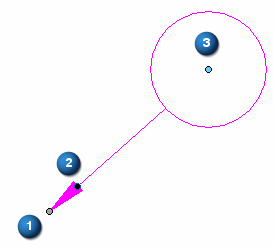
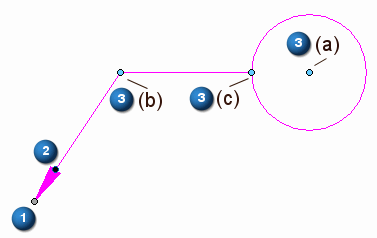
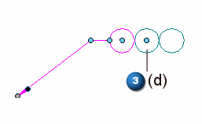
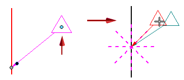
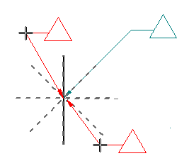
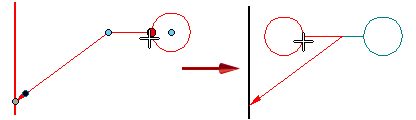
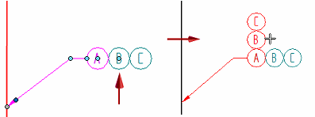

Annotation edit handles
Annotations and leader lines have a standard set of handles, which you can use to manipulate the annotation. When you select an annotation, the handles are visible.
For information about 3D annotation edit handles, see the help topic PMI edit handles and cursors.
Identifying handles based on color and location
There are three types of handles that appear on an annotation. The handle colors identify the type of modification the handle performs. The location of the handle indicates what will change.
Basic handles for a 2D annotation with no break line are (1) a gray connection handle, (2) a dark blue terminator handle, and (3, 3a) a light blue edit handle.

With a break line, two more light blue edit handles are available (3b, 3c):

Some compound annotations have another edit handle (light blue) at their center (3d):

Using the handles
Refer to the following table for an explanation of what the handles do. To learn how to use the annotation edit handles, as well as other techniques for moving an annotation, see the help topic Edit an annotation.
|
Handle name and location |
Purpose |
Does this |
|
(1) Connection handle |
Connects the annotation to an element or to a free space point. |
Moves the start point of the leader along the connected element or in free space. (Ctrl+drag does the same thing.) Alt+drag disconnects the leader and removes associativity. Example:
Use this technique when you want to move a plain text callout and turn off the leader. Alt+Ctrl+drag moves the leader start point to a new location, yet preserves associativity. Example:
Use this technique to retain the model-derived information in a hole feature callout when you drag the leader off of the hole geometry and then turn the leader off. |
|
(2) Terminator handle |
Changes the terminator type. |
|
|
(3)(3a) Edit handle—Move |
Moves an annotation freely. |
Moves the annotation by adjusting the leader length and orientation freely. The break line length and angle do not change.
If no break line, displays snap lines for snapping the annotation to different orientations.  |
|
(3b) Edit handle—Leader |
Changes the leader line orientation and length. |
Moves the annotation by adjusting the leader length and orientation using snap lines.  |
|
Alt+drag changes the leader line connection point to a balloon, callout, or feature control frame. |
Displays keypoints for you to snap the leader to a different connection point on the annotation.
|
|
|
(3c) Edit handle—Break line |
Modifies the break line. |
Lengthens or shortens the break line.
Flips the annotation and break line to the opposite side of the leader.  |
|
Alt+drag changes the break line connection point to a balloon, callout, or feature control frame. |
Displays keypoints for you to snap the break line to a different connection point on the annotation. The new orientation of the break line is always perpendicular to the dashed line indicator.
|
|
|
(3d) Edit handle |
Transforms a compound annotation or changes the width of a fixed-width text box. |
For balloon stacks—Changes the orientation from horizontal to vertical, and from vertical to horizontal.  |
 Displays a list of terminator images and names for you to change the terminator type.
Displays a list of terminator images and names for you to change the terminator type.


The handle colors are defined by the Handle 1, Handle 2, and Handle 3 colors on the Colors tab in the Solid Edge Options dialog box. The default handle colors are different in 2D and 3D environments.